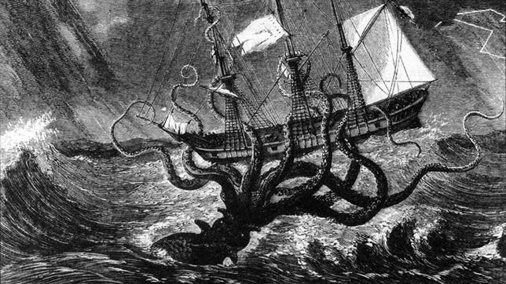

El kraken (/ˈkrɑːkən/) es una enorme y colosal criatura marina de la mitología escandinava descrita comúnmente como un tipo de pulpo o calamar gigante o medusa que, emergiendo de las profundidades, ataca barcos y devora a los marineros. El mito puede realmente haberse originado en avistamientos de calamares gigantes reales que estimadamente tendrían de 33 a 45 metros de largo, incluyendo los 10 tentáculos.
